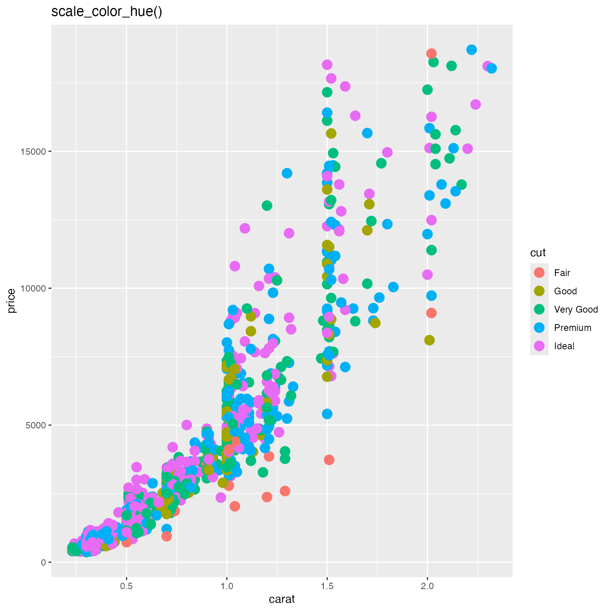
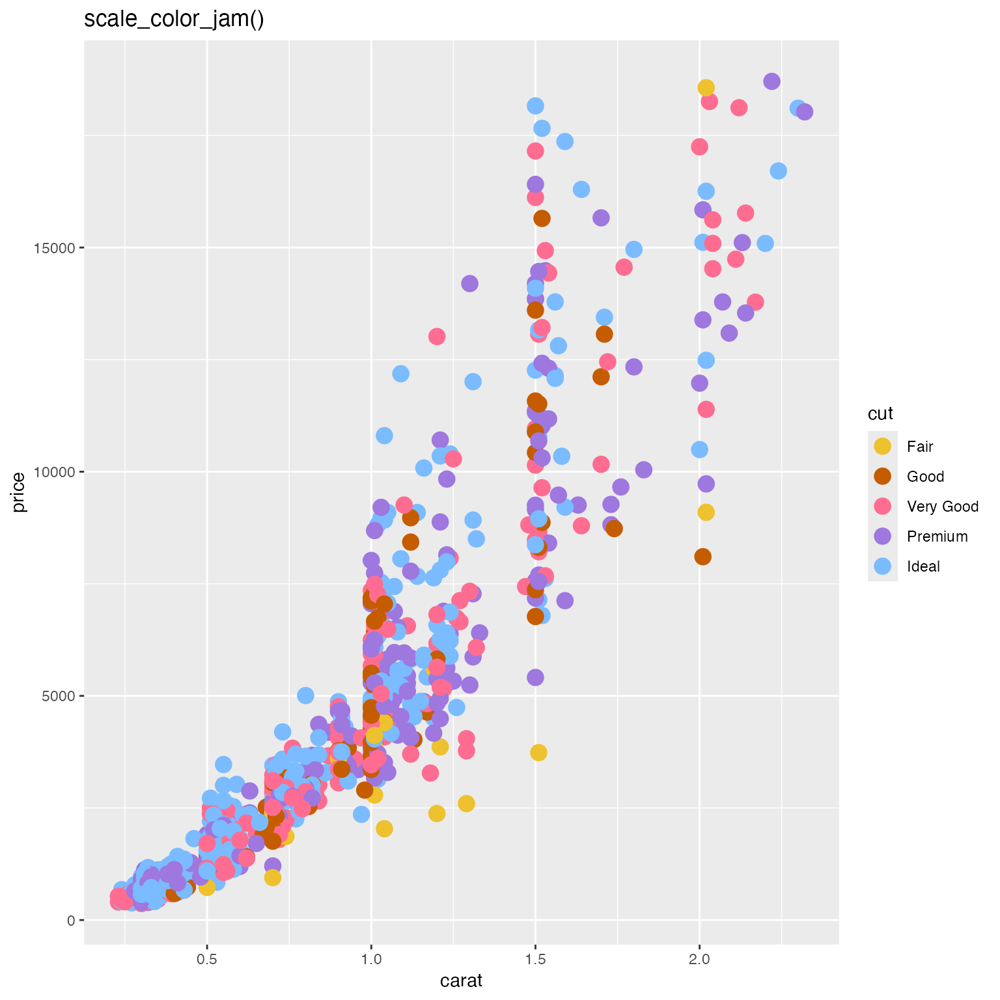
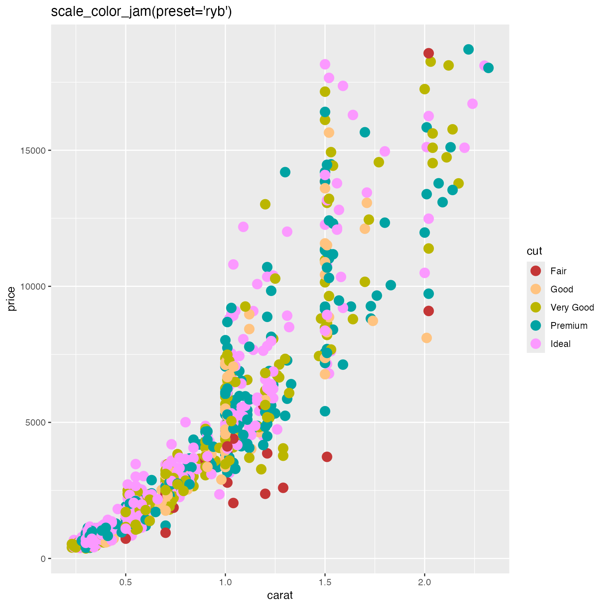

Apply rainbowJam categorical colors to a ggplot2 object
scale_color_jam( ..., type = "seq", palette = 1, direction = 1, invert = FALSE, darkFactor = 1, sFactor = 1, alpha = 1, useGrey = 20, h1 = NULL, h2 = NULL, preset = "custom" )
| ... | additional arguments are passed to |
|---|---|
| type | character string indicating the colors are sequential
|
| palette | integer value indicating the categorical palette to use, intended to provide variety in the color assignment. (Not yet implemented.) |
| direction | integer indicating whether to reverse the color
assignment, either |
| invert | logical indicating whether to return corresponding
contrasting colors, for example for text labels, typically either
|
| darkFactor, sFactor | numeric sent to |
| alpha | numeric value indicating the alpha transparency, on a scale of 0 (transparent) to 1 (non-transparent). |
| useGrey | integer value between 0 and 100 indicating the grey
value, as sent to |
This function provides a function in the format scale_color_*
to be applied to ggplot2 objects. It can provide a more visibly
distinct set of categorical colors than ggplot2::scale_color_hue().
Other colorjam ggplot2:
jam_pal(),
scale_fill_jam(),
theme_jam()
if (suppressPackageStartupMessages(require(ggplot2))) { dsamp <- ggplot2::diamonds[sample(nrow(ggplot2::diamonds), 1000),]; d <- ggplot2::ggplot(dsamp, ggplot2::aes(carat, price)) + ggplot2::geom_point(ggplot2::aes(colour=cut), size=4); print(d + ggplot2::scale_color_hue() + ggplot2::ggtitle("scale_color_hue()")); print(d + scale_color_jam() + ggplot2::ggtitle("scale_color_jam()")); print(d + scale_color_jam(preset="ryb") + ggplot2::ggtitle("scale_color_jam(preset='ryb')")); }#> Warning: package ‘ggplot2’ was built under R version 3.6.2